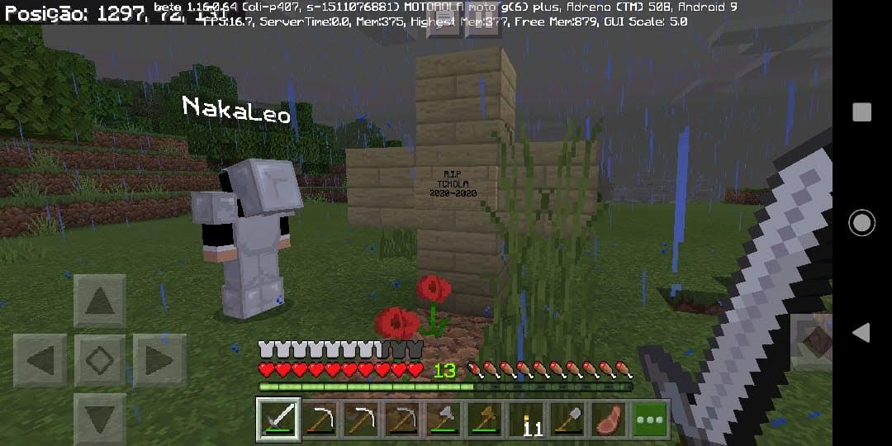
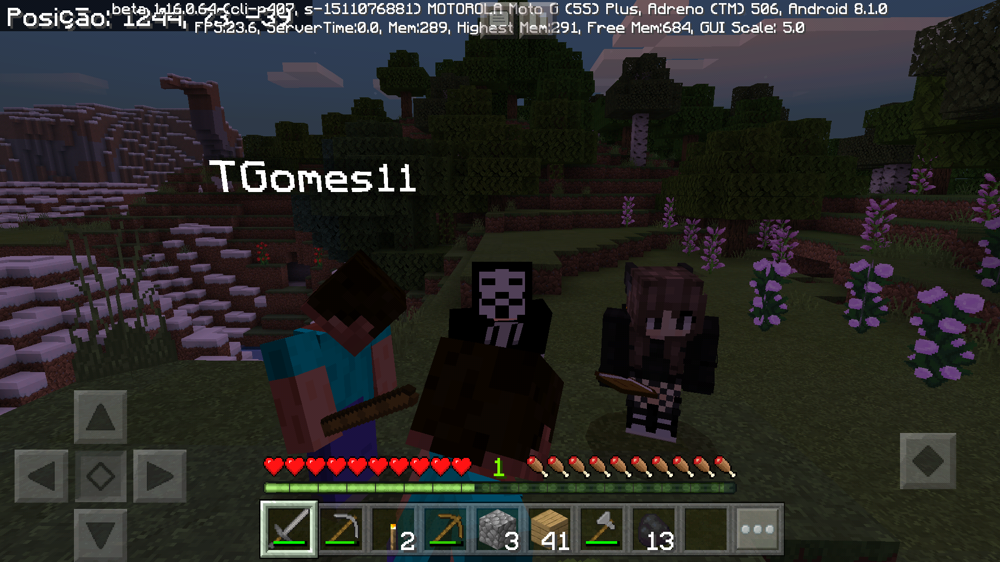

O Minecraft sempre esteve bem presente na minha vida desde 2014 quando eu tinha 10 anos, que foi quando um amigo meu me apresentou esse jogo maravilhoso. Lembro de ter ido na casa dele para brincar e jogar video game, então ele colocou o minecraft e começou a me explicar como ele funcionava. Logo fiquei encantado com a tamanha liberdade e oportunidade que o jogo dava para nós, podiamos criar literalmente qualquer coisa, travar batalhas e nos aventurar por aquele mundo infinito. E de lá pra cá eu nunca mais parei de jogar, joguei no video game, no notebook e até no celular. Acredito que o que faz o jogo ser tão rico além da liberdade que ele te entrega, é o fato de você poder jogar com os seus amigos com muita facilidade, pois hoje diversos dispositivos comportam esse jogo. E não há coisa melhor do que juntar seus amigos, criar um mundo e explorar juntos como nas imagens ao lado de quando eu estava me divertindo muito com meus amigos! Talvez não tanto na primeira imagem, pois nosso cachorro no jogo tinha acabado de morrer para um creepper e estavamos fazendo seu enterro, mas tirando foi tudo de bom.




:strip_icc()/i.s3.glbimg.com/v1/AUTH_08fbf48bc0524877943fe86e43087e7a/internal_photos/bs/2019/x/B/xA2e6zTWGowum5RoAMHQ/minecraft-classic-10-anos-navegador.jpg)